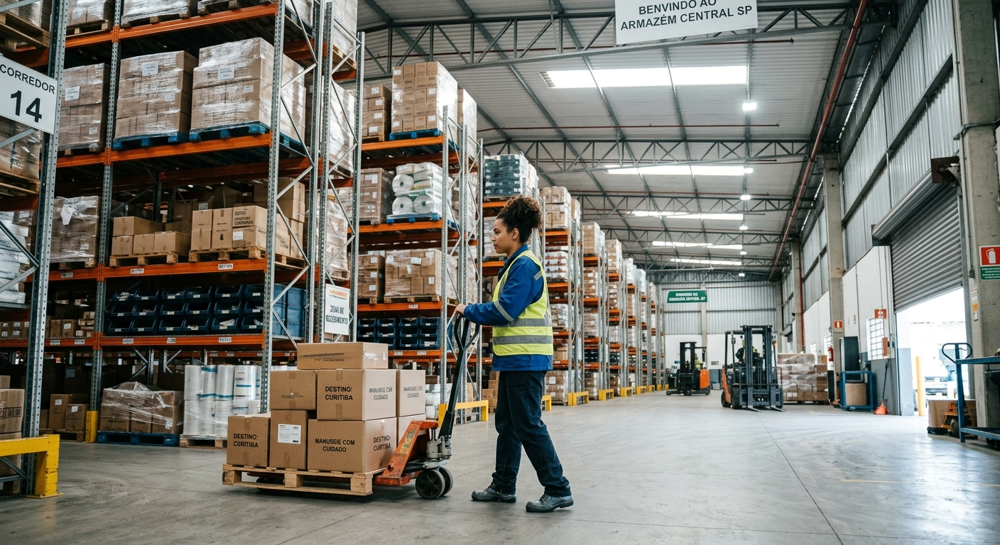
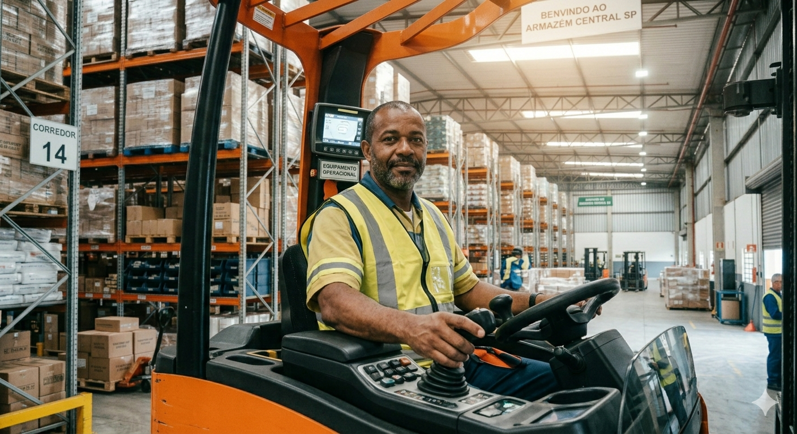
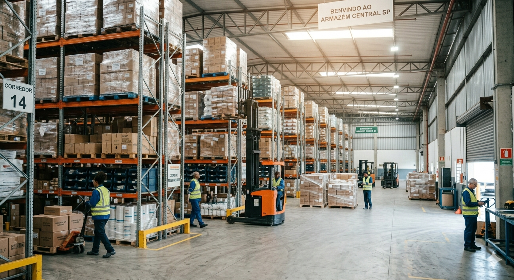

O SIMA (Sistema Inteligente de Monitoramento de Armazém) é o produto principal da CRAB e foi desenvolvido para resolver de vez o problema da má gestão de estoques. Por meio de sensores de bloqueio instalados nos pontos estratégicos do armazém, o resultado é visibilidade total, rastreamento preciso e zero margem para perdas. Tudo funcionando de forma automática, inteligente e contínua.
Nossa tecnologia de sensores customizados detecta a presença de paletes e envia os dados direto para uma interface financeira. Saiba exatamente quanto custa cada m² ocioso e otimize o giro do seu atacado com dados reais, não estimativas.


A CRAB nasceu de um grupo de estudantes que enxergaram um problema real no dia a dia das empresas logísticas e decidiram fazer algo a respeito. Unindo criatividade, tecnologia e muita colaboração, desenvolveram uma solução que combina hardware e software em perfeita sintonia sensores inteligentes integrados a um sistema robusto de gerenciamento. Tudo pensado para dar às empresas o controle que elas sempre precisaram, mas nunca tiveram de verdade.
Nossa missão é desenvolver soluções tecnológicas inteligentes que simplificam a gestão logística, garantindo controle, segurança e eficiência para empresas que não podem se dar ao luxo de perder.
Nome:
Telefone:
Email:
Assunto:
